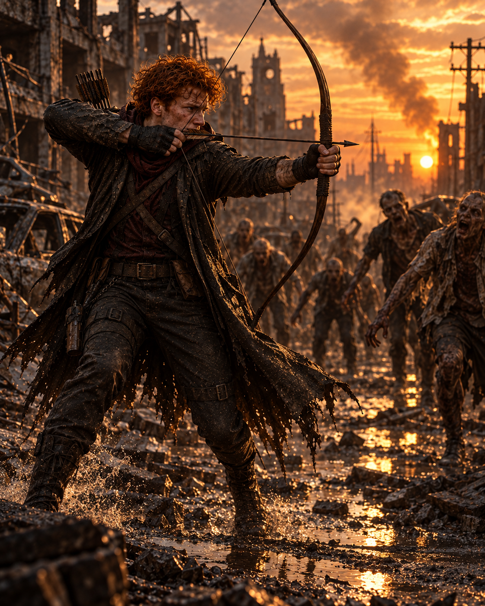

O primeiro exemplo
Nicolai cresceu enxergando o irmão mais velho como seu herói. Observava Alucard, repetia seus gestos e tentava alcançar a imagem de força que havia construído ao redor dele.

Durante anos, Nicolai tentou seguir os passos do irmão que chamava de herói. No dia em que salvou Sally de uma horda, encontrou algo que não podia copiar de Alucard: a própria coragem.
Nicolai cresceu enxergando o irmão mais velho como seu herói. Observava Alucard, repetia seus gestos e tentava alcançar a imagem de força que havia construído ao redor dele.
Com o passar dos anos, percebeu que admirar alguém não bastava para descobrir quem era. A vida o obrigou a abandonar a imitação e construir uma identidade que fosse somente sua.
Coragem não foi a ausência do medo. Foi o instante em que Nicolai decidiu que Sally não enfrentaria a horda sozinha.
Este dossiê preserva os registros individuais e familiares de Nicolai. As imagens do casal foram transferidas para o Arquivo de Vínculos.
Sally nunca conheceu os pais. Foi adotada por uma família que estava longe de ser um bom exemplo, mas permaneceu grata pelo lar que recebeu — mesmo não sendo o lar que imaginava.
A vontade de sair daquele lugar tornou-se um projeto de vida. Sally sonhava em ser policial, mudar o próprio destino e proteger outras pessoas. O futuro, porém, reservou para ela uma estrada muito diferente.
Foi nessa estrada que Nicolai a encontrou cercada por uma horda. Ao escolher salvá-la, descobriu uma coragem que não sabia possuir. Naquele instante, deixou de tentar ser Alucard e começou a compreender quem era.
ABRIR DOSSIÊ DE SALLY →